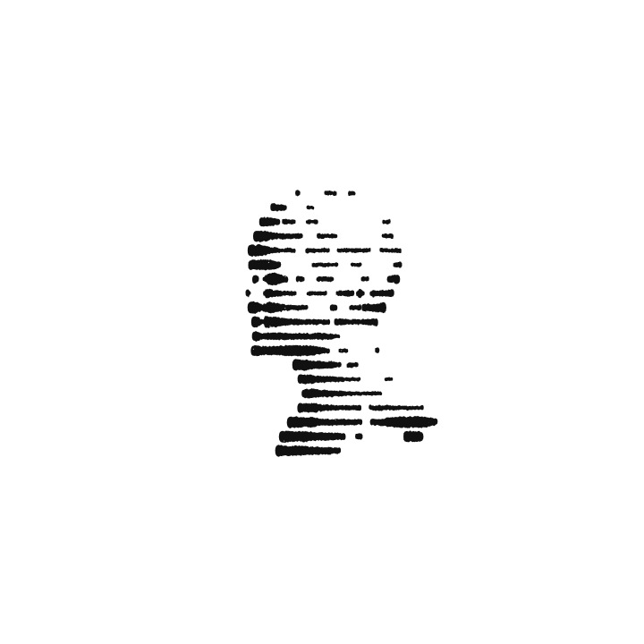

Views on energy, infrastructure, and the systems quietly remaking the world.
Written with curiosity, optimism, and a stubborn respect for reality.
Every revolution begins with small fractures.
Changing incentives, disruptive tools, and the gradual but constant reordering of the status quo.
Slowly, quietly, then all at once.
It feels increasingly clear that we are entering a new era of building, one shaped not only by
foundational technologies, but by the implications they carry
for existing systems, institutions, and the physical world.
Periods like these are rare. They ask for attention, reflection, and a willingness to engage with change.
This space is my effort to do so.
My goal is to learn, grow, and navigate these changing times with optimism and an open mind.